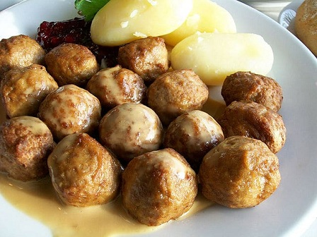
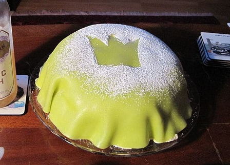
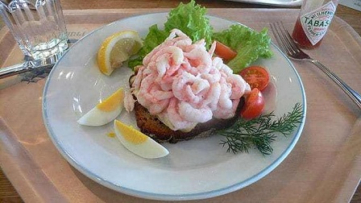

Saiba tudo sobre a Suécia
por Matheus Oliveira
A GASTRONOMIA SUECA
Os suecos são conhecidos por sua alimentação e hábitos saudáveis. A gastronomia sueca é baseada em peixes e frutos do mar. No topo da lista de comidas mais consumidas pelos suecos estão peixes com alto teor de vitaminas e baixos níveis de gordura. Mesmo com um esquema de alimentação regrado, eles se permitem saborear doces e tem até um dia na semana chamado Lördagsgodis para degustar sobremesas, chocolates e doces de todos os tipos.
Almondega

Prinsesstarta – Torta da Princesa 
Outra iguaria da gastronomia sueca, é meio bolo e meio torta. Você pode encontrar versões caríssimas desse doce, mas na seção de congelados do supermercado existem opções mais em conta. Podem comprar que não desaponta. É tão popular que tem até uma semana oficial dedicada a essa iguaria. É a terceira semana do mês de setembro.
SANDUÍCEHS DE CAMARÃO 
Os Räksmörgås são sanduíches abertos que levam queijo, limão siciliano, pepino e maionese. Algumas versões levam ovos e abacate. Esse sanduíche é o queridinho da gastronomia sueca e o petisco típico mais servido nas festas.
Os bolinhos de carne conhecidos na Suécia como köttbullar são sem dúvida a comida mais típica e fácil de preparar. É possível encontrar as bolinhas prontas nos supermercados em versões de vários sabores e tipos como por exemplo: de frango, carne, carne de porco, com pimentas, queijo e sabor simples. É uma comida barata e rápida por isso acaba sendo mais popular que o peixe. Comprou, botou na frigideira e voilà está pronto.
A torta recebeu esse nome em meados de 1920, pois era a iguaria preferida das princesas Astrid, Margaretha e Märtha filhas do irmão do rei da Suécia.